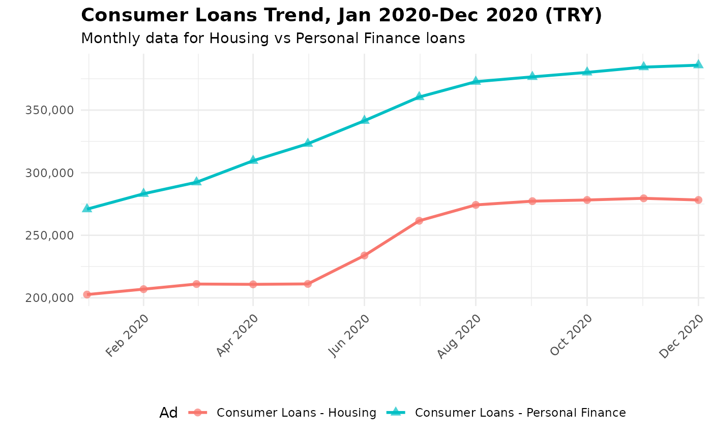
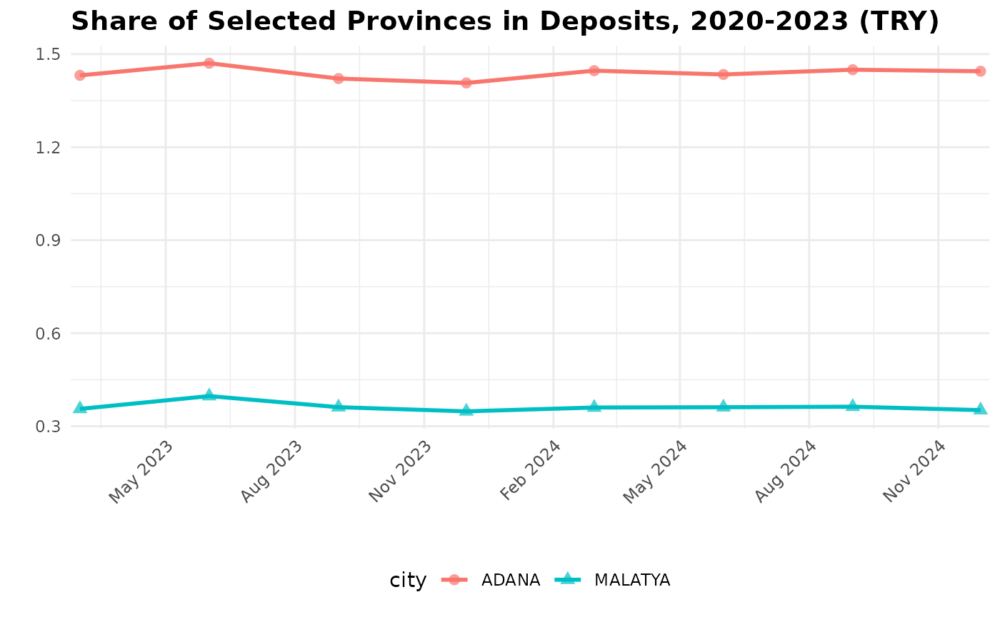

The rbrsa package facilitates programmatic access to
Turkish banking sector data from the Turkish Banking Regulation and
Supervision Agency (BRSA, known as BDDK in Turkish). The package
provides R users with a clean interface to fetch monthly and quarterly
banking statistics, financial reports, and sectoral indicators directly
from BRSA’s official APIs. This vignette demonstrates a complete
workflow: from discovering available data to fetching it and performing
a basic analysis.
Some key features are - Direct API access to BRSA monthly bulletins
(17 financial tables) - Quarterly Finturk data with city-level
granularity (7 tables, 82 cities including ‘HEPSİ’ for all cities) -
Consistent parameter interface for both data sources - Built-in metadata
for tables, banking groups, and cities - Multiple export formats: RDS,
CSV, Excel via save_data() - Returns base R data frames
ready for analysis
Unlike configuration-heavy approaches, such as bddkR (which is a based on bddkdata, a Python package), rbrsa uses a programmatic design that dynamically extracts column structures from API responses while maintaining a stable user interface. This approach reduces maintenance burden and adapts to BRSA API changes.
Related Packages: - bddkR (R): Uses
manual configuration for translations and column mappings - bddk (Python): Provides
similar functionality for Python users
- bddkdata (Python):
Provides similar functionality for Python/pandas users - pybrsa (Python,
forthcoming): Python companion to this package with consistent API
# Install from CRAN
install.packages("rbrsa")
# Or install the development version from GitHub
# install.packages("pak")
pak.::pkg_install("obakis/rbrsa")Before requesting data, it’s useful to explore what tables and
banking groups are available from BDDK’s two main portals.
Both portals are official sources, but they organize the data
differently: The Monthly
Bulletin Portal provides high-level, summary reports designed for
general consumption and quick overviews of monthly trends without any
geographic coverage. The Finturk Data System
provides granular, detailed data, including statistics broken down by
province, whereas the standard Monthly Bulletin offers national-level
aggregates.
Important note: Currently, only a single
grup_kod can be specified per request. The underlying BDDK
API supports multiple grup_kod codes, and this
functionality will be added in a future version.
Monthly Bulletin provides high-level, national aggregate statistics.
# List available tables in the Monthly Bulletin
bulletin_tables <- list_tables("bddk", lang="en")
#>
#> Available tables for bddk data:
#> Table_No Title
#> 1 Balance Sheet
#> 2 Profit and Loss
#> 3 Loans
#> 4 Consumer Loans
#> 5 Sectoral Loan Distribution
#> 6 SME Loans
#> 7 Syndication Securitization Loans
#> 8 Securities
#> 9 Deposits by Type
#> 10 Deposits by Maturity
#> 11 Liquidity Position
#> 12 Capital Adequacy
#> 13 Foreign Currency Position
#> 14 Off-Balance Sheet Transactions
#> 15 Ratios
#> 16 Other Information
#> 17 Foreign Branch Ratios
head(bulletin_tables)
#> Table_No Title
#> 1 1 Balance Sheet
#> 2 2 Profit and Loss
#> 3 3 Loans
#> 4 4 Consumer Loans
#> 5 5 Sectoral Loan Distribution
#> 6 6 SME Loans
# List available banking groups for the Monthly Bulletin
bulletin_groups <- list_groups("bddk", lang="en")
#>
#> Available banking groups for bddk data:
#> Group_Code Name
#> 10001 Sector Total
#> 10002 Deposit Banks
#> 10008 Deposit - Domestic Private
#> 10009 Deposit - Public
#> 10010 Deposit - Foreign
#> 10003 Participation Banks
#> 10004 Development and Investment Banks
#> 10005 Domestic Private Banks
#> 10006 Public Banks
#> 10007 Foreign Banks
head(bulletin_groups)
#> Group_Code Name
#> 1 10001 Sector Total
#> 2 10002 Deposit Banks
#> 3 10008 Deposit - Domestic Private
#> 4 10009 Deposit - Public
#> 5 10010 Deposit - Foreign
#> 6 10003 Participation BanksFinturk system provides more granular data, including provincial breakdowns.
# List available tables in Finturk
finturk_tables <- list_tables("finturk", lang="en")
#>
#> Available tables for finturk data:
#> Table_No Title
#> 1 Loans (Thousand TL)
#> 2 Deposits (Thousand TL)
#> 3 Retail Banking (Thousand TL)
#> 4 Selected Sectoral Loans (Thousand TL)
#> 5 Ratios (%)
#> 6 Branches and Distribution by Population (TL)
#> 7 Gold Loans and Gold Deposits (Thousand TL)
finturk_tables
#> Table_No Title
#> 1 1 Loans (Thousand TL)
#> 2 2 Deposits (Thousand TL)
#> 3 3 Retail Banking (Thousand TL)
#> 4 4 Selected Sectoral Loans (Thousand TL)
#> 5 5 Ratios (%)
#> 6 6 Branches and Distribution by Population (TL)
#> 7 7 Gold Loans and Gold Deposits (Thousand TL)
# List available banking groups for Finturk
finturk_groups <- list_groups("finturk", lang="en")
#>
#> Available banking groups for finturk data:
#> Group_Code Name
#> 10001 Sector Total
#> 10002 Deposit Banks
#> 10003 Development and Investment Banks
#> 10004 Participation Banks
#> 10005 Foreign Banks
#> 10006 Public Banks
#> 10007 Domestic Private Banks
finturk_groups
#> Group_Code Name
#> 1 10001 Sector Total
#> 2 10002 Deposit Banks
#> 3 10003 Development and Investment Banks
#> 4 10004 Participation Banks
#> 5 10005 Foreign Banks
#> 6 10006 Public Banks
#> 7 10007 Domestic Private Banks
# List of cities for Finturk
cities <- list_cities()
#>
#> Available cities for Finturk quarterly data:
#> (Use plate number in fetch_finturk functions)
#> Plaka 0 = HEPSI (All Cities)
#> plaka il
#> 0 HEPSİ
#> 1 ADANA
#> 2 ADIYAMAN
#> 3 AFYONKARAHİSAR
#> 4 AĞRI
#> 5 AMASYA
#> 6 ANKARA
#> 7 ANTALYA
#> 8 ARTVİN
#> 9 AYDIN
#> 10 BALIKESİR
#> 11 BİLECİK
#> 12 BİNGÖL
#> 13 BİTLİS
#> 14 BOLU
#> 15 BURDUR
#> 16 BURSA
#> 17 ÇANAKKALE
#> 18 ÇANKIRI
#> 19 ÇORUM
#> 20 DENİZLİ
#> 21 DİYARBAKIR
#> 22 EDİRNE
#> 23 ELAZIĞ
#> 24 ERZİNCAN
#> 25 ERZURUM
#> 26 ESKİŞEHİR
#> 27 GAZİANTEP
#> 28 GİRESUN
#> 29 GÜMÜŞHANE
#> 30 HAKKARİ
#> 31 HATAY
#> 32 ISPARTA
#> 33 MERSİN
#> 34 İSTANBUL
#> 35 İZMİR
#> 36 KARS
#> 37 KASTAMONU
#> 38 KAYSERİ
#> 39 KIRKLARELİ
#> 40 KIRŞEHİR
#> 41 KOCAELİ
#> 42 KONYA
#> 43 KÜTAHYA
#> 44 MALATYA
#> 45 MANİSA
#> 46 KAHRAMANMARAŞ
#> 47 MARDİN
#> 48 MUĞLA
#> 49 MUŞ
#> 50 NEVŞEHİR
#> 51 NİĞDE
#> 52 ORDU
#> 53 RİZE
#> 54 SAKARYA
#> 55 SAMSUN
#> 56 SİİRT
#> 57 SİNOP
#> 58 SİVAS
#> 59 TEKİRDAĞ
#> 60 TOKAT
#> 61 TRABZON
#> 62 TUNCELİ
#> 63 ŞANLIURFA
#> 64 UŞAK
#> 65 VAN
#> 66 YOZGAT
#> 67 ZONGULDAK
#> 68 AKSARAY
#> 69 BAYBURT
#> 70 KARAMAN
#> 71 KIRIKKALE
#> 72 BATMAN
#> 73 ŞIRNAK
#> 74 BARTIN
#> 75 ARDAHAN
#> 76 IĞDIR
#> 77 YALOVA
#> 78 KARABÜK
#> 79 KİLİS
#> 80 OSMANİYE
#> 81 DÜZCE
#> 999 YURT DIŞI
head(cities)
#> plaka il
#> 1 0 HEPSİ
#> 2 1 ADANA
#> 3 2 ADIYAMAN
#> 4 3 AFYONKARAHİSAR
#> 5 4 AĞRI
#> 6 5 AMASYALet’s fetch “Table 4: Consumer Loans” for public banks
(grup_kod = 10006) between January 2020 and December
2020.
my_dat <- fetch_bddk(
start_year = 2020,
start_month = 1,
end_year = 2020,
end_month = 12,
table_no = 4,
grup_kod = 10001,
verbose=TRUE
)
#> Fetching table 4 for 12 months: 2020-01 to 2020-12
#> [1/12] 2020-01... 41 rows
#> [2/12] 2020-02... 41 rows
#> [3/12] 2020-03... 41 rows
#> [4/12] 2020-04... 41 rows
#> [5/12] 2020-05... 41 rows
#> [6/12] 2020-06... 41 rows
#> [7/12] 2020-07... 41 rows
#> [8/12] 2020-08... 41 rows
#> [9/12] 2020-09... 41 rows
#> [10/12] 2020-10... 41 rows
#> [11/12] 2020-11... 41 rows
#> [12/12] 2020-12... 41 rows
# Examine the structure of the returned data
cat("Dimensions:", dim(my_dat), "\n")
#> Dimensions: 492 10
colnames(my_dat)
#> [1] "group_name" "BasitSira" "Ad" "BasitFont" "TRY"
#> [6] "FX" "Total" "grup_kod" "period" "currency"
head(my_dat)
#> group_name BasitSira Ad BasitFont
#> 1 Banking Sector 1 Consumer Loans (2+3+4) bold
#> 2 Banking Sector 2 Consumer Loans - Housing
#> 3 Banking Sector 3 Consumer Loans - Vehicle
#> 4 Banking Sector 4 Consumer Loans - Personal Finance
#> 5 Banking Sector 5 Consumer Loans - Fx Indexed (6+7+8) bold
#> 6 Banking Sector 6 Consumer Loans - Housing (Fx Indexed)
#> TRY FX Total grup_kod period currency
#> 1 480482 82 480564 10001 2020-01 TL
#> 2 202648 46 202694 10001 2020-01 TL
#> 3 6979 0 6979 10001 2020-01 TL
#> 4 270855 36 270892 10001 2020-01 TL
#> 5 65 0 65 10001 2020-01 TL
#> 6 55 0 55 10001 2020-01 TL
## To save the results:
# temp_file <- tempfile() # filename should be without extension
# save_data(my_dat, temp_file, format = "csv")Let’s compare “Consumer Loans - Housing” and “Consumer Loans - Personal Finance” over time.
library(dplyr)
library(ggplot2)
colnames(my_dat)
#> [1] "group_name" "BasitSira" "Ad" "BasitFont" "TRY"
#> [6] "FX" "Total" "grup_kod" "period" "currency"
cols = c("Consumer Loans - Housing","Consumer Loans - Personal Finance")
p = my_dat |>
select(Ad,TRY,period) |>
filter(Ad %in% cols) |>
mutate(date=as.Date(paste0(period, "-01"))) |>
ggplot(aes(x=date, y=TRY, color=Ad, group=Ad, shape=Ad)) +
geom_line(linewidth = 1) +
geom_point(size = 2.4, alpha = 0.7) +
scale_x_date(
date_breaks = "2 months", # Show tick every 3 months
date_labels = "%b %Y", # Format as "Jan 2020"
expand = c(0.01, 0) # Reduce padding
) +
scale_y_continuous(
labels = scales::comma # Format numbers with commas
) +
labs(
title = "Consumer Loans Trends, Jan 2020-Dec 2020 (TRY)",
subtitle = "Monthly data for Housing vs Personal Finance loans",
x = "",
y = ""
) +
theme_minimal() +
theme(
legend.position = "bottom", # This moves the legend to the bottom
axis.text.x = element_text(angle = 45, hjust = 1),
plot.title = element_text(face = "bold", size = 14),
)
p
Now let’s explore the more detailed Finturk data. We’ll fetch “Table
2: Deposits” for all banks (grup_kod = 10001), all
provinces over 2023 and 2024.
my_dat2 <- fetch_finturk(
start_year = 2023,
start_month = 3,
end_year = 2024,
end_month = 12,
table_no = 2,
grup_kod = 10001,
il=0,
verbose=FALSE
)
# Examine the structure of the returned data
cat("Dimensions:", dim(my_dat2), "\n")
#> Dimensions: 656 15
colnames(my_dat2)
#> [1] "grup_kod" "Yıl"
#> [3] "Ay" "il_adi"
#> [5] "Grup" "Tasarruf Mevduatı"
#> [7] "Tasarruf Mevduatı (TL)" "Tasarruf Mevduatı (DTH)"
#> [9] "Diğer Mevduat" "Diğer Mevduat (TL)"
#> [11] "Diğer Mevduat (DTH)" "Toplam Mevduat"
#> [13] "plaka" "period"
#> [15] "table_no"
head(my_dat2)
#> grup_kod Yıl Ay il_adi Grup Tasarruf Mevduatı
#> 1 10001 2023 3 ADANA SEKTÖR 101555827
#> 2 10001 2023 3 ADIYAMAN SEKTÖR 14189512
#> 3 10001 2023 3 AFYONKARAHİSAR SEKTÖR 26182581
#> 4 10001 2023 3 AĞRI SEKTÖR 4541209
#> 5 10001 2023 3 AKSARAY SEKTÖR 22535449
#> 6 10001 2023 3 AMASYA SEKTÖR 9456856
#> Tasarruf Mevduatı (TL) Tasarruf Mevduatı (DTH) Diğer Mevduat
#> 1 68165445 33390382 40948954
#> 2 8769470 5420042 4133270
#> 3 13630002 12552579 7218373
#> 4 2860903 1680306 1495488
#> 5 10411079 12124370 4662855
#> 6 5505734 3951122 1956146
#> Diğer Mevduat (TL) Diğer Mevduat (DTH) Toplam Mevduat plaka period table_no
#> 1 29321746 11627208 142504781 1 2023-03 2
#> 2 3422143 711127 18322782 2 2023-03 2
#> 3 5476164 1742209 33400954 3 2023-03 2
#> 4 1246086 249402 6036697 4 2023-03 2
#> 5 3259852 1403003 27198304 68 2023-03 2
#> 6 1588133 368013 11413002 5 2023-03 2
## To save the results:
# temp_file <- tempfile() # filename should be without extension
# save_data(my_dat, temp_file, format = "csv")Finturk data includes a province column (il). Let’s
examine the share of selected provinces in total deposits ove 2020-2024
period.
sel_cities =c("ADANA","MALATYA","MUĞLA","KAYSERİ")
cols = c("il_adi", "period","Toplam Mevduat")
lookup <- c(city="il_adi", deposit="Toplam Mevduat")
p2 = my_dat2[,cols] |>
rename(all_of(lookup)) |>
mutate(date=as.Date(paste0(period, "-01"))) |>
mutate(.by=period, sh = 100*deposit/sum(deposit, na.rm=TRUE)) |>
filter( city %in% sel_cities) |>
ggplot(aes(x=date, y=sh, color=city, group=city, shape=city)) +
geom_line(linewidth = 1) +
geom_point(size = 2.4, alpha = 0.7) +
scale_x_date(
date_breaks = "3 months", # Show tick every 3 months
date_labels = "%b %Y", # Format as "Jan 2020"
expand = c(0.01, 0) # Reduce padding
) +
labs(
title = "Share of Selected Provinces in Deposits, 2020-2023 (TRY)",
x = "",
y = ""
) +
theme_minimal() +
theme(
legend.position = "bottom", # This moves the legend to the bottom
axis.text.x = element_text(angle = 45, hjust = 1),
plot.title = element_text(face = "bold", size = 14),
)
p2
The save_data() function allows you to export results in
various formats for use in other tools.
# Save to different formats. file name must be without extension
save_data(my_dat, "filename_you_prefer", format = "csv")
save_data(my_dat, "filename_you_prefer", format = "rds")
save_data(my_dat, "filename_you_prefer", format = "xlsx")
# Using tempfile() for examples (as in README)
temp_file <- tempfile()
save_data(my_dat, temp_file, format = "csv")
cat("Data saved to:", temp_file, "\n")This vignette demonstrated the basic workflow of the
rbrs package. To learn more:
list_tables() and list_groups().pybrsa package (https://github.com/obakis/pybrsa) for similar
functionality in Python. (UNDER CONSTRUCTION)For more detailed function references and advanced usage, visit the complete package documentation at https://obakis.github.io/rbrsa/